2015-10-06 - Nº 23
Editorial
Aqui está a Newsletter Nº 23 no seu formato habitual. Foram adicionados botões de partilha nas várias redes sociais, se gostar da Newsletter partilhe-a!
Esta Newsletter encontra-se mais uma vez disponível no sistema documenta do altLab. Todas as Newsletters encontram-se indexadas no link.
Esta Newsletter tem os seguintes tópicos:
O Facebook e a Eutelsat juntaram-se para disponibilizar Internet no continente africano. A NASA disponibilizou um acervo de milhares de fotografias sobre as missões Apollo. O prémio Nobel da Física vai para dois cientistas que demonstraram que os neutrinos têm massa. Na Newsletter desta semana iremos apresentar um projeto de maker que é um jogo de Pong que funciona num monitor VGA e que foi construído com recurso a um Arduino. Iremos construir um circuito que é uma Campainha de Porta.
 João Alves ([email protected])
João Alves ([email protected])
O conteúdo da Newsletter encontra-se sob a licença  Creative Commons Attribution-NonCommercial-ShareAlike 4.0 International License.
Creative Commons Attribution-NonCommercial-ShareAlike 4.0 International License.
Novidades da Semana ^
Eutelsat and Facebook to partner on satellite initiative to get more Africans online
"Eutelsat Communications and Facebook today announce they are partnering on a new initiative that will leverage satellite technologies to get more Africans online. Under a multi-year agreement with Spacecom, the two companies will utilise the entire broadband payload on the future AMOS-6 satellite and will build a dedicated system comprising satellite capacity, gateways and terminals. In providing reach to large parts of Sub-Saharan Africa, Eutelsat and Facebook will each be equipped to pursue their ambition to accelerate data connectivity for the many users deprived of the economic and social benefits of the Internet."
-
"The Project Apollo Archive was created in 1999 as a companion to my "Contact Light" web site...a personal retrospective of the era of the space race. A subsequent collaboration between the Archive and Eric Jones' Apollo Lunar Surface Journal led to aquisition over the years of countless historic Apollo and other space history images generously provided by NASA and others for processing and hosting on the NASA-hosted Journal as well as on my site. Contrary to some recent media reports, this new Flickr gallery is not a NASA undertaking, but an independent one, involving the re-presentation of the public domain NASA-provided Apollo mission imagery as it was originally provided in its raw, high-resolution and unprocessed form by the Johnson Space Center on DVD-R and including from the center's Gateway to Astronaut Photography of Earth web site. Processed images from few film magazines to fill in gaps were also obtained from the Lunar and Planetary Institute's Apollo Image Atlas."
-
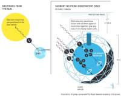
"The Nobel Prize in Physics 2015 recognises Takaaki Kajita in Japan and Arthur B. McDonald in Canada, for their key contributions to the experiments which demonstrated that neutrinos change identities. This metamorphosis requires that neutrinos have mass. The discovery has changed our understanding of the innermost workings of matter and can prove crucial to our view of the universe. Around the turn of the millennium, Takaaki Kajita presented the discovery that neutrinos from the atmosphere switch between two identities on their way to the Super-Kamiokande detector in Japan. Meanwhile, the research group in Canada led by Arthur B. McDonald could demonstrate that the neutrinos from the Sun were not disappearing on their way to Earth. Instead they were captured with a different identity when arriving to the Sudbury Neutrino Observatory."
Ciência e Tecnologia ^
Origami tubes assembled into stiff, yet reconfigurable structures and metamaterials
"Thin sheets have long been known to experience an increase in stiffness when they are bent, buckled, or assembled into smaller interlocking structures. We introduce a unique orientation for coupling rigidly foldable origami tubes in a “zipper” fashion that substantially increases the system stiffness and permits only one flexible deformation mode through which the structure can deploy. The flexible deployment of the tubular structures is permitted by localized bending of the origami along prescribed fold lines. All other deformation modes, such as global bending and twisting of the structural system, are substantially stiffer because the tubular assemblages are overconstrained and the thin sheets become engaged in tension and compression. The zipper-coupled tubes yield an unusually large eigenvalue bandgap that represents the unique difference in stiffness between deformation modes. Furthermore, we couple compatible origami tubes into a variety of cellular assemblages that can enhance mechanical characteristics and geometric versatility, leading to a potential design paradigm for structures and metamaterials that can be deployed, stiffened, and tuned. The enhanced mechanical properties, versatility, and adaptivity of these thin sheet systems can provide practical solutions of varying geometric scales in science and engineering."
Lightweight solar cells track the sun, providing 40 percent more energy than fixed cells
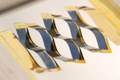
"University of Michigan engineers have developed an innovative array of solar cells that can capture up to 40 percent more energy than conventional fixed solar cells. The trick: borrowing from kirigami (the ancient Japanese art of paper cutting), the solar cells are aimed at different angles, allowing for part of the array to be always perpendicular to the Sun’s rays. “The design takes what a large tracking solar panel does and condenses it into something that is essentially flat,” said Aaron Lamoureux, a doctoral student in materials science and engineering and first author on the open-access paper in Nature Communications. Residential rooftops would need significant reinforcing to support the weight of conventional costly sun-tracking systems, he said."
Integrated all-photonic non-volatile multi-level memory
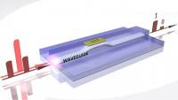
"Implementing on-chip non-volatile photonic memories has been a long-term, yet elusive goal. Photonic data storage would dramatically improve performance in existing computing architectures1 by reducing the latencies associated with electrical memories2 and potentially eliminating optoelectronic conversions3. Furthermore, multi-level photonic memories with random access would allow for leveraging even greater computational capability4, 5, 6. However, photonic memories3, 7, 8, 9, 10 have thus far been volatile. Here, we demonstrate a robust, non-volatile, all-photonic memory based on phase-change materials. By using optical near-field effects, we realize bit storage of up to eight levels in a single device that readily switches between intermediate states. Our on-chip memory cells feature single-shot readout and switching energies as low as 13.4 pJ at speeds approaching 1 GHz. We show that individual memory elements can be addressed using a wavelength multiplexing scheme. Our multi-level, multi-bit devices provide a pathway towards eliminating the von Neumann bottleneck and portend a new paradigm in all-photonic memory and non-conventional computing."
Modelos 3D ^
Com a disponibilidade de ferramentas que permitem dar azo a nossa imaginação na criação de peças 3D e espaços como o thingiverse para as publicar, esta rubrica apresenta alguns modelos selecionados que poderão ser úteis.
Parametric plug - OpenScad - rudy Ruffel (http://www.thingiverse.com/thing:593002)
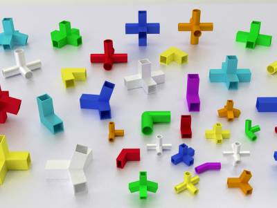
Another new configurable project.
You can chose:
A cylinder or rectangle / square, The length, width, depth The thickness of your walls, The number of plug, The angle of Each plug With this project you can assemble Any structure. Just indicate indication the dimension of your branch angle and you-have simply to print and assemble.
Note: when creating the stl it is possible according to the configuration that you will make the object is not in the optimal orientation for printing so you will need to adjust this parameter.
Design may be in need of support.
If you are having any difficulties, need advices or you want me to make changes, I remain at your disposal.
Now you can also download the version 8 tubes or 14 tubes. (The release of 14 tubes only works for the cylinder).
If you want to learn OpenSCAD you can follow these video tutorials : http://www.thingiverse.com/thing:656880
Big 4 inch Seven Segment Display (http://www.thingiverse.com/thing:13099)
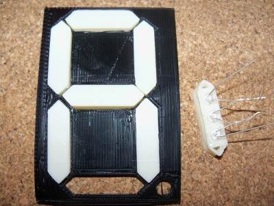
It's a big seven segment display :) I used three 5mm red/orange LEDs per segment with the intent that they could be wired in series and driven straight from a micro-controller output pin. Connecting my orange LED's wired up that way to a 5V supply gave a reading of 13 mA. A micro-controller should have no trouble driving the three leds without any transistors or resistors or anything. Depending on the voltage drop of your LED's you may need a small current limiting resistor. Other colors like green and blue will likely need to be wired in parallel with current limiting resistors due to the higher voltage drop of those LED's.
I'd like to do a clock with this sometime soon. So I'll have to add an additional front plate with a clock type display instead of a decimal point.
Eventually I'll try for an 8 inch display using interlocking segments. Once the prusa is running I could do an 8 inch display all in one print. Of course the ultimate goal is a 12 inch display like evil mad scientist labs has for $50 each. Then world domination. (cue maniacal laughter)
Customizable Convex Polyhedra (http://www.thingiverse.com/thing:233540)
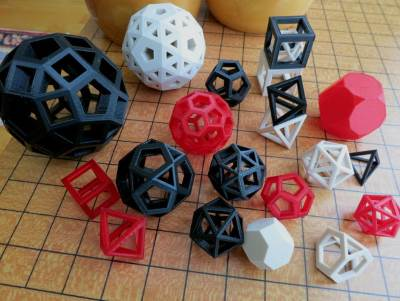
openSCAD database of all convex polyhedra with regular faces except for prisms and anti-prisms. This includes the Platonic, Archimedean, and Johnson polyhedra (over 100 total!).
Pictured are all the Platonic solids and a few Archimedean solids created with the customizer.
I've also included platonic.stl for printing the 5 platonic solids, each scaled to be ~2 cm tall.
This was built on some previous work:
George Hart's VRML polyhedra models, (http://www.georgehart.com/virtual-polyhedra/vp.html)
And pmoews' polyhedra Thingiverse designs (e.g. http://www.thingiverse.com/thing:16508), which have the face data from the VRML files converted to triangles to work with openSCAD.
Circuitos ^
Aqui é apresentado um circuito simples que poderá ser construído com componentes.
Campainha de porta
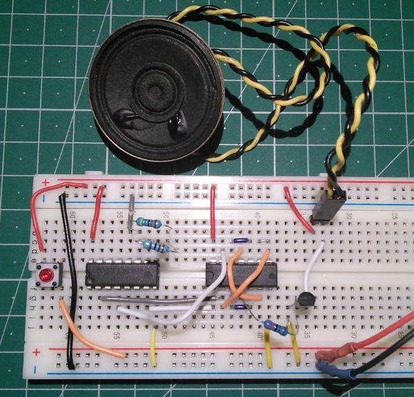
Hoje será construído um circuito para fazer uma campainha de porta com dois tons.
Iremos usar dois IC, um CD4060 que é um oscilador com um contador binário de 14 passos e um CD4001 que implementa 4 portas NOR. O primeiro integrado irá fazer a divisão da frequência e será o gerador do som. O segundo integrado será responsável por converter a frequência e assegurar a troca entre as duas frequências.
Para se iniciar o som deverá ser premido o botão.
Esquemático
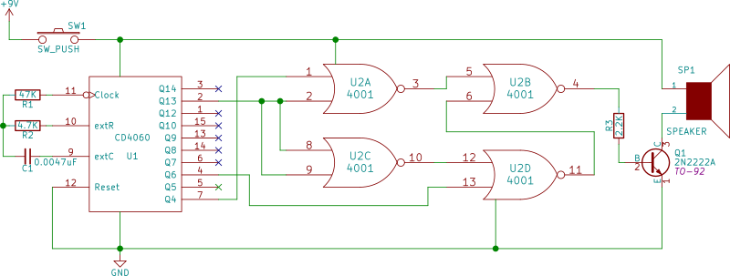
Componentes (BOM):
Circuito:
- 1x IC CD4060 (U1)
- 1x IC CD4001 (U2)
- 1x Condensador Cerâmico de 0.0047uF (472) (C1)
- 1x Resistência de 47K Ohms (R1)
- 1x Resistência de 4.7K Ohms (R2)
- 1x Resistência de 2.2K Ohms (R3)
- 1x Botão SPST (S1)
- 1x Transístor NPN 2N2222 (Q1)
- 1x Speaker de 8 Ohms (SP1)
Pin-out dos IC/Componentes
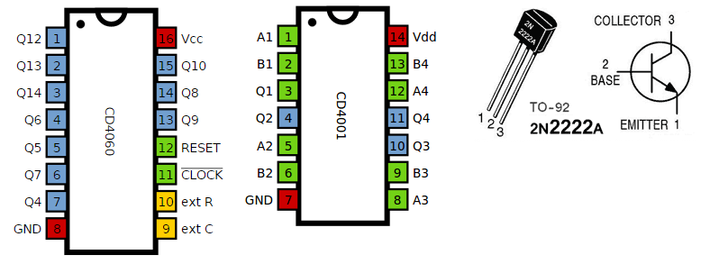
Adicionar componentes ao Kicad
Hoje deparei-me com a situação de não ter o CD4060 disponível no Kicad para colocá-lo no esquemático e por isso resolvi fazer o IC. Usei a aplicação online - Quick KICAD Library Component Builder : Component Setup
Seleccionei as seguintes opções:
- Component Name: CD4060
- Pin Layout Style: DIL
- Pin Count N: 16
Depois carregar no botão "Assign Pin"
- Pinos 1 a 7, 13 a 15: Q12, Q13, Q14, Q6, Q5, Q7, Q4, Q9, Q8, Q10 do tipo Output
- Pinos 8 e 16: GND, Vcc do tipo "Power Input". Estes pinos devem ter uma orientação diferente - GND - 3a Opção, Vcc - 4ª Opção.
- Pinos 9 e 10: extC, extR do tipo "Output"
- Pinos 11 e 12: clock, Reset do tipo "Input"
Depois carregar no botão "Build Library Component".
Copiar o ficheiro descarregado para a pasta "kicad/share/library". Depois acrescentar o mesmo nas bibliotecas de componentes Menu Preferences -> Component Libraries, opção Add e selecionar o ficheiro "CD4060.lib". Para dar os ultimo retoques usei o próprio Kicad - Library Editor.
Links úteis:
Artigo do Maker ^
Projeto interessante publicado por um maker.
VGA Pong with Arduino Uno
O projecto de maker da semana é um jogo de pong que foi feito pelo Rob Cai e que se encontra publicado no instructables.
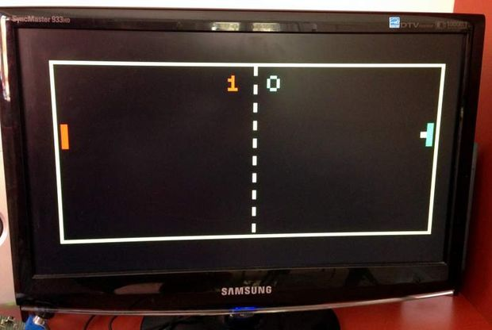
É uma versão colorida do jogo classico Pong que corre num Arduino Uno e é apresentado num monitor VGA. É um jogo para dois jogadores e que tem inclusivamente som e funciona numa resolução de 120 x 60 pixeis.
Introdução
Para a construção do jogo e como o objectivo era evitar hardware complexo foram usadas algumas resistências, um conector DSUB15, um par de potenciómetros e botões. A placa do Arduino e os outros componentes foram colocados em duas caixas de madeira.
Instruções
Este jogo usa a biblioteca VGAx que foi escrita pelo Smaffer. Mais informação neste link.
O código pode ser descarregado deste link ou copiado abaixo.
// Arduino Pong for VGA output - Version 1.1
// written by Roberto Melzi - August the 17th, 2015
// Arduino software version: 1.6.4
//
// Main differencees from version 1.0:
// 1) two separate paddles for Left and Right players
// 2) newest VGAx libraries used, thus "print" has to be renamed to "printPROGMEM "
// 3) minor bugs fixed
//
// See it running on YouTube: "Arduino VGA Pong (with colors)"
// https://www.youtube.com/watch?v=mrRGosn48gw
// VGAx Library By Sandro Maffiodo (version downloaded on August the 17th 2015) here:
// https://github.com/smaffer/vgax
// Post on the Arduino forum:
// http://forum.arduino.cc/index.php?topic=328631.0
// at position #8
#include <VGAX.h>
#include <math.h>
#define FNT_NANOFONT_HEIGHT 6
#define FNT_NANOFONT_SYMBOLS_COUNT 95
#include <VGAXUtils.h>
#define WHEEL_ONE_PIN 3 //analog
#define WHEEL_TWO_PIN 1 //analog
#define BUTTON_ONE_PIN A4 //digital
#define BUTTON_TWO_PIN A2 //digital
// NB: pin A0 is used for the audio!
#define PADDLE_HEIGHT 8
#define PADDLE_WIDTH 2
#define RIGHT_PADDLE_X (VGAX_WIDTH-4)
#define LEFT_PADDLE_X 2
#define MAX_Y_VELOCITY 0.1
VGAX vga;
VGAXUtils vgaU;
//data size=570 bytes
const unsigned char fnt_nanofont_data[FNT_NANOFONT_SYMBOLS_COUNT][1+FNT_NANOFONT_HEIGHT] PROGMEM={
{ 1, 128, 128, 128, 0, 128, 0, }, //glyph '!' code=0
{ 3, 160, 160, 0, 0, 0, 0, }, //glyph '"' code=1
//{ 5, 80, 248, 80, 248, 80, 0, }, //glyph '#' code=2
{ 5, 248, 248, 248, 248, 248, 0, }, //glyph '#' code=2 - full rectangle
{ 5, 120, 160, 112, 40, 240, 0, }, //glyph '$' code=3
{ 5, 136, 16, 32, 64, 136, 0, }, //glyph '%' code=4
{ 5, 96, 144, 104, 144, 104, 0, }, //glyph '&' code=5
{ 2, 128, 64, 0, 0, 0, 0, }, //glyph ''' code=6
{ 2, 64, 128, 128, 128, 64, 0, }, //glyph '(' code=7
{ 2, 128, 64, 64, 64, 128, 0, }, //glyph ')' code=8
{ 3, 0, 160, 64, 160, 0, 0, }, //glyph '*' code=9
{ 3, 0, 64, 224, 64, 0, 0, }, //glyph '+' code=10
{ 2, 0, 0, 0, 0, 128, 64, }, //glyph ',' code=11
{ 3, 0, 0, 224, 0, 0, 0, }, //glyph '-' code=12
{ 1, 0, 0, 0, 0, 128, 0, }, //glyph '.' code=13
{ 5, 8, 16, 32, 64, 128, 0, }, //glyph '/' code=14
{ 4, 96, 144, 144, 144, 96, 0, }, //glyph '0' code=15
{ 3, 64, 192, 64, 64, 224, 0, }, //glyph '1' code=16
{ 4, 224, 16, 96, 128, 240, 0, }, //glyph '2' code=17
{ 4, 224, 16, 96, 16, 224, 0, }, //glyph '3' code=18
{ 4, 144, 144, 240, 16, 16, 0, }, //glyph '4' code=19
{ 4, 240, 128, 224, 16, 224, 0, }, //glyph '5' code=20
{ 4, 96, 128, 224, 144, 96, 0, }, //glyph '6' code=21
{ 4, 240, 16, 32, 64, 64, 0, }, //glyph '7' code=22
{ 4, 96, 144, 96, 144, 96, 0, }, //glyph '8' code=23
{ 4, 96, 144, 112, 16, 96, 0, }, //glyph '9' code=24
{ 1, 0, 128, 0, 128, 0, 0, }, //glyph ':' code=25
{ 2, 0, 128, 0, 0, 128, 64, }, //glyph ';' code=26
{ 3, 32, 64, 128, 64, 32, 0, }, //glyph '<' code=27
{ 3, 0, 224, 0, 224, 0, 0, }, //glyph '=' code=28
{ 3, 128, 64, 32, 64, 128, 0, }, //glyph '>' code=29
{ 4, 224, 16, 96, 0, 64, 0, }, //glyph '?' code=30
{ 4, 96, 144, 176, 128, 112, 0, }, //glyph '@' code=31
{ 4, 96, 144, 240, 144, 144, 0, }, //glyph 'A' code=32
{ 4, 224, 144, 224, 144, 224, 0, }, //glyph 'B' code=33
{ 4, 112, 128, 128, 128, 112, 0, }, //glyph 'C' code=34
{ 4, 224, 144, 144, 144, 224, 0, }, //glyph 'D' code=35
{ 4, 240, 128, 224, 128, 240, 0, }, //glyph 'E' code=36
{ 4, 240, 128, 224, 128, 128, 0, }, //glyph 'F' code=37
{ 4, 112, 128, 176, 144, 112, 0, }, //glyph 'G' code=38
{ 4, 144, 144, 240, 144, 144, 0, }, //glyph 'H' code=39
{ 3, 224, 64, 64, 64, 224, 0, }, //glyph 'I' code=40
{ 4, 240, 16, 16, 144, 96, 0, }, //glyph 'J' code=41
{ 4, 144, 160, 192, 160, 144, 0, }, //glyph 'K' code=42
{ 4, 128, 128, 128, 128, 240, 0, }, //glyph 'L' code=43
{ 5, 136, 216, 168, 136, 136, 0, }, //glyph 'M' code=44
{ 4, 144, 208, 176, 144, 144, 0, }, //glyph 'N' code=45
{ 4, 96, 144, 144, 144, 96, 0, }, //glyph 'O' code=46
{ 4, 224, 144, 224, 128, 128, 0, }, //glyph 'P' code=47
{ 4, 96, 144, 144, 144, 96, 16, }, //glyph 'Q' code=48
{ 4, 224, 144, 224, 160, 144, 0, }, //glyph 'R' code=49
{ 4, 112, 128, 96, 16, 224, 0, }, //glyph 'S' code=50
{ 3, 224, 64, 64, 64, 64, 0, }, //glyph 'T' code=51
{ 4, 144, 144, 144, 144, 96, 0, }, //glyph 'U' code=52
{ 3, 160, 160, 160, 160, 64, 0, }, //glyph 'V' code=53
{ 5, 136, 168, 168, 168, 80, 0, }, //glyph 'W' code=54
{ 4, 144, 144, 96, 144, 144, 0, }, //glyph 'X' code=55
{ 3, 160, 160, 64, 64, 64, 0, }, //glyph 'Y' code=56
{ 4, 240, 16, 96, 128, 240, 0, }, //glyph 'Z' code=57
{ 2, 192, 128, 128, 128, 192, 0, }, //glyph '[' code=58
{ 5, 128, 64, 32, 16, 8, 0, }, //glyph '\' code=59
{ 2, 192, 64, 64, 64, 192, 0, }, //glyph ']' code=60
{ 5, 32, 80, 136, 0, 0, 0, }, //glyph '^' code=61
{ 4, 0, 0, 0, 0, 240, 0, }, //glyph '_' code=62
{ 2, 128, 64, 0, 0, 0, 0, }, //glyph '`' code=63
{ 3, 0, 224, 32, 224, 224, 0, }, //glyph 'a' code=64
{ 3, 128, 224, 160, 160, 224, 0, }, //glyph 'b' code=65
{ 3, 0, 224, 128, 128, 224, 0, }, //glyph 'c' code=66
{ 3, 32, 224, 160, 160, 224, 0, }, //glyph 'd' code=67
{ 3, 0, 224, 224, 128, 224, 0, }, //glyph 'e' code=68
{ 2, 64, 128, 192, 128, 128, 0, }, //glyph 'f' code=69
{ 3, 0, 224, 160, 224, 32, 224, }, //glyph 'g' code=70
{ 3, 128, 224, 160, 160, 160, 0, }, //glyph 'h' code=71
{ 1, 128, 0, 128, 128, 128, 0, }, //glyph 'i' code=72
{ 2, 0, 192, 64, 64, 64, 128, }, //glyph 'j' code=73
{ 3, 128, 160, 192, 160, 160, 0, }, //glyph 'k' code=74
{ 1, 128, 128, 128, 128, 128, 0, }, //glyph 'l' code=75
{ 5, 0, 248, 168, 168, 168, 0, }, //glyph 'm' code=76
{ 3, 0, 224, 160, 160, 160, 0, }, //glyph 'n' code=77
{ 3, 0, 224, 160, 160, 224, 0, }, //glyph 'o' code=78
{ 3, 0, 224, 160, 160, 224, 128, }, //glyph 'p' code=79
{ 3, 0, 224, 160, 160, 224, 32, }, //glyph 'q' code=80
{ 3, 0, 224, 128, 128, 128, 0, }, //glyph 'r' code=81
{ 2, 0, 192, 128, 64, 192, 0, }, //glyph 's' code=82
{ 3, 64, 224, 64, 64, 64, 0, }, //glyph 't' code=83
{ 3, 0, 160, 160, 160, 224, 0, }, //glyph 'u' code=84
{ 3, 0, 160, 160, 160, 64, 0, }, //glyph 'v' code=85
{ 5, 0, 168, 168, 168, 80, 0, }, //glyph 'w' code=86
{ 3, 0, 160, 64, 160, 160, 0, }, //glyph 'x' code=87
{ 3, 0, 160, 160, 224, 32, 224, }, //glyph 'y' code=88
{ 2, 0, 192, 64, 128, 192, 0, }, //glyph 'z' code=89
{ 3, 96, 64, 192, 64, 96, 0, }, //glyph '{' code=90
{ 1, 128, 128, 128, 128, 128, 0, }, //glyph '|' code=91
{ 3, 192, 64, 96, 64, 192, 0, }, //glyph '}' code=92
{ 3, 96, 192, 0, 0, 0, 0, }, //glyph '~' code=93
{ 4, 48, 64, 224, 64, 240, 0, }, //glyph '£' code=94
};
static const char str0[] PROGMEM="0";
static const char str1[] PROGMEM="1";
static const char str2[] PROGMEM="2";
static const char str3[] PROGMEM="3";
static const char str4[] PROGMEM="4";
static const char str5[] PROGMEM="5";
static const char str6[] PROGMEM="6";
static const char str7[] PROGMEM="7";
static const char str8[] PROGMEM="8";
static const char str9[] PROGMEM="9";
static const char str20[] PROGMEM="#";
static const char str10[] PROGMEM="Arduino VGA Pong";
static const char str11[] PROGMEM="by Roberto Melzi";
static const char str15[] PROGMEM="Red wins!";
static const char str16[] PROGMEM="Green wins!";
static const char str21[] PROGMEM="########";
void setup() {
//Serial.begin(9600);
vga.begin();
randomSeed(1);
}
unsigned char x,y;
boolean buttonStatus = 0;
boolean buttonOneStatus = 0;
boolean buttonTwoStatus = 0;
int wheelOnePosition;
int wheelTwoPosition;
int counterMenu = 0;
int counterMenu2 = 0;
int state = 1;
int rightPaddleY;
int leftPaddleY;
int rightPaddleY0 = 20;
int leftPaddleY0 = 20;
int ballX = 4;
int ballY = 20;
int ballX0 = 20;
int ballY0 = 20;
float ballPX = 20;
float ballPY = 20;
float ballVx;
float ballVy;
int frame = 0;
int scoreR = 0;
int scoreL = 0;
int scoreMax = 8;
boolean PaddleHit = 0;
void parameterIni() {
ballVx = random(50., 80.)/500. + (scoreL + scoreR)/35;
ballVy = random(40.)/1000. - 0.02;
}
void processInputs() {
buttonOneStatus = digitalRead(BUTTON_ONE_PIN);
buttonTwoStatus = digitalRead(BUTTON_TWO_PIN);
wheelOnePosition = analogRead(WHEEL_ONE_PIN);
wheelTwoPosition = analogRead(WHEEL_TWO_PIN);
buttonStatus = buttonOneStatus || buttonTwoStatus;
}
void drawMenu() {
counterMenu2++;
vga.delay(10);
if (counterMenu2 > 50){
counterMenu++;
vga.printPROGMEM((byte*)fnt_nanofont_data, FNT_NANOFONT_SYMBOLS_COUNT, FNT_NANOFONT_HEIGHT, 3, 1, str10, 26, 16, (counterMenu%3) + 1);
vga.printPROGMEM((byte*)fnt_nanofont_data, FNT_NANOFONT_SYMBOLS_COUNT, FNT_NANOFONT_HEIGHT, 3, 1, str11, 28, 28, (counterMenu%3) + 1);
counterMenu2 = 0;
}
}
void drawBorder() {
vgaU.draw_line(0,0,VGAX_WIDTH-1,0,3);
vgaU.draw_line(0,VGAX_HEIGHT-1,VGAX_WIDTH-1,VGAX_HEIGHT-1,3);
vgaU.draw_line(0,0,0,VGAX_HEIGHT-1,3);
vgaU.draw_line(VGAX_WIDTH-1,0,VGAX_WIDTH-1,VGAX_HEIGHT,3);
}
void drawScore() {
vga.printPROGMEM((byte*)fnt_nanofont_data, FNT_NANOFONT_SYMBOLS_COUNT, FNT_NANOFONT_HEIGHT, 3, 1, str20, 52, 4, 0);
vga.printPROGMEM((byte*)fnt_nanofont_data, FNT_NANOFONT_SYMBOLS_COUNT, FNT_NANOFONT_HEIGHT, 3, 1, str20, 64, 4, 0);
if(scoreL == 0) {vga.printPROGMEM((byte*)fnt_nanofont_data, FNT_NANOFONT_SYMBOLS_COUNT, FNT_NANOFONT_HEIGHT, 3, 1, str0, 52, 4, 1);}
if(scoreR == 0) {vga.printPROGMEM((byte*)fnt_nanofont_data, FNT_NANOFONT_SYMBOLS_COUNT, FNT_NANOFONT_HEIGHT, 3, 1, str0, 64, 4, 2);}
if(scoreL == 1) {vga.printPROGMEM((byte*)fnt_nanofont_data, FNT_NANOFONT_SYMBOLS_COUNT, FNT_NANOFONT_HEIGHT, 3, 1, str1, 52, 4, 1);}
if(scoreR == 1) {vga.printPROGMEM((byte*)fnt_nanofont_data, FNT_NANOFONT_SYMBOLS_COUNT, FNT_NANOFONT_HEIGHT, 3, 1, str1, 64, 4, 2);}
if(scoreL == 2) {vga.printPROGMEM((byte*)fnt_nanofont_data, FNT_NANOFONT_SYMBOLS_COUNT, FNT_NANOFONT_HEIGHT, 3, 1, str2, 52, 4, 1);}
if(scoreR == 2) {vga.printPROGMEM((byte*)fnt_nanofont_data, FNT_NANOFONT_SYMBOLS_COUNT, FNT_NANOFONT_HEIGHT, 3, 1, str2, 64, 4, 2);}
if(scoreL == 3) {vga.printPROGMEM((byte*)fnt_nanofont_data, FNT_NANOFONT_SYMBOLS_COUNT, FNT_NANOFONT_HEIGHT, 3, 1, str3, 52, 4, 1);}
if(scoreR == 3) {vga.printPROGMEM((byte*)fnt_nanofont_data, FNT_NANOFONT_SYMBOLS_COUNT, FNT_NANOFONT_HEIGHT, 3, 1, str3, 64, 4, 2);}
if(scoreL == 4) {vga.printPROGMEM((byte*)fnt_nanofont_data, FNT_NANOFONT_SYMBOLS_COUNT, FNT_NANOFONT_HEIGHT, 3, 1, str4, 52, 4, 1);}
if(scoreR == 4) {vga.printPROGMEM((byte*)fnt_nanofont_data, FNT_NANOFONT_SYMBOLS_COUNT, FNT_NANOFONT_HEIGHT, 3, 1, str4, 64, 4, 2);}
if(scoreL == 5) {vga.printPROGMEM((byte*)fnt_nanofont_data, FNT_NANOFONT_SYMBOLS_COUNT, FNT_NANOFONT_HEIGHT, 3, 1, str5, 52, 4, 1);}
if(scoreR == 5) {vga.printPROGMEM((byte*)fnt_nanofont_data, FNT_NANOFONT_SYMBOLS_COUNT, FNT_NANOFONT_HEIGHT, 3, 1, str5, 64, 4, 2);}
if(scoreL == 6) {vga.printPROGMEM((byte*)fnt_nanofont_data, FNT_NANOFONT_SYMBOLS_COUNT, FNT_NANOFONT_HEIGHT, 3, 1, str6, 52, 4, 1);}
if(scoreR == 6) {vga.printPROGMEM((byte*)fnt_nanofont_data, FNT_NANOFONT_SYMBOLS_COUNT, FNT_NANOFONT_HEIGHT, 3, 1, str6, 64, 4, 2);}
if(scoreL == 7) {vga.printPROGMEM((byte*)fnt_nanofont_data, FNT_NANOFONT_SYMBOLS_COUNT, FNT_NANOFONT_HEIGHT, 3, 1, str7, 52, 4, 1);}
if(scoreR == 7) {vga.printPROGMEM((byte*)fnt_nanofont_data, FNT_NANOFONT_SYMBOLS_COUNT, FNT_NANOFONT_HEIGHT, 3, 1, str7, 64, 4, 2);}
if(scoreL == scoreMax) {
vga.printPROGMEM((byte*)fnt_nanofont_data, FNT_NANOFONT_SYMBOLS_COUNT, FNT_NANOFONT_HEIGHT, 3, 1, str8, 52, 4, 1);
vga.printPROGMEM((byte*)fnt_nanofont_data, FNT_NANOFONT_SYMBOLS_COUNT, FNT_NANOFONT_HEIGHT, 3, 1, str15, 12, 24, 1);
ballX = VGAX_WIDTH - 6;
buttonStatus = 0;
while(buttonStatus == 0){
processInputs();
ballY = ((wheelOnePosition / 8) * (VGAX_HEIGHT-PADDLE_HEIGHT-1))/ 128 + 4;
drawGameScreen();
}
parameterIni();
drawStartScreen();
state = 2;
}
if(scoreR == scoreMax) {
vga.printPROGMEM((byte*)fnt_nanofont_data, FNT_NANOFONT_SYMBOLS_COUNT, FNT_NANOFONT_HEIGHT, 3, 1, str8, 64, 4, 2);
vga.printPROGMEM((byte*)fnt_nanofont_data, FNT_NANOFONT_SYMBOLS_COUNT, FNT_NANOFONT_HEIGHT, 3, 1, str16, 66, 24, 2);
ballX = 4;
buttonStatus = 0;
while(buttonStatus == 0){
processInputs();
ballY = ((wheelTwoPosition / 8) * (VGAX_HEIGHT-PADDLE_HEIGHT-1))/ 128 + 4;
drawGameScreen();
}
parameterIni();
drawStartScreen();
state = 2;
}
}
// this is for the beginning game window ---------------------------------------------------------------------------------------
void drawStartScreen() {
//vga.clear(0);
vga.printPROGMEM((byte*)fnt_nanofont_data, FNT_NANOFONT_SYMBOLS_COUNT, FNT_NANOFONT_HEIGHT, 3, 1, str20, 52, 4, 0);
vga.printPROGMEM((byte*)fnt_nanofont_data, FNT_NANOFONT_SYMBOLS_COUNT, FNT_NANOFONT_HEIGHT, 3, 1, str20, 64, 4, 0);
vga.printPROGMEM((byte*)fnt_nanofont_data, FNT_NANOFONT_SYMBOLS_COUNT, FNT_NANOFONT_HEIGHT, 3, 1, str0, 52, 4, 1);
vga.printPROGMEM((byte*)fnt_nanofont_data, FNT_NANOFONT_SYMBOLS_COUNT, FNT_NANOFONT_HEIGHT, 3, 1, str0, 64, 4, 2);
vga.printPROGMEM((byte*)fnt_nanofont_data, FNT_NANOFONT_SYMBOLS_COUNT, FNT_NANOFONT_HEIGHT, 3, 1, str21, 12, 24, 0);
vga.printPROGMEM((byte*)fnt_nanofont_data, FNT_NANOFONT_SYMBOLS_COUNT, FNT_NANOFONT_HEIGHT, 3, 1, str21, 66, 24, 0);
vga.printPROGMEM((byte*)fnt_nanofont_data, FNT_NANOFONT_SYMBOLS_COUNT, FNT_NANOFONT_HEIGHT, 3, 1, str21, 11, 24, 0);
vga.printPROGMEM((byte*)fnt_nanofont_data, FNT_NANOFONT_SYMBOLS_COUNT, FNT_NANOFONT_HEIGHT, 3, 1, str21, 65, 24, 0);
drawBorder();
drawGameScreen();
buttonStatus = 0;
vga.delay(200);
}
// this is the main function to draw the game screen ----------------------------------------------------------------------------
void drawGameScreen() {
//draw right paddle
rightPaddleY = ((wheelOnePosition / 8) * (VGAX_HEIGHT-PADDLE_HEIGHT-1))/ 128 + 1;
x = RIGHT_PADDLE_X;
if (rightPaddleY != rightPaddleY0 || PaddleHit == 1){
vgaU.draw_line(x,rightPaddleY0,x,rightPaddleY0+PADDLE_HEIGHT,0);
vgaU.draw_line(x+1,rightPaddleY0,x+1,rightPaddleY0+PADDLE_HEIGHT,0);
vgaU.draw_line(x,rightPaddleY,x,rightPaddleY+PADDLE_HEIGHT,2);
vgaU.draw_line(x+1,rightPaddleY,x+1,rightPaddleY+PADDLE_HEIGHT,2);
}
//draw left paddle
leftPaddleY = ((wheelTwoPosition / 8) * (VGAX_HEIGHT-PADDLE_HEIGHT-1))/ 128 + 1;
x = LEFT_PADDLE_X;
if (leftPaddleY != leftPaddleY0 || PaddleHit == 1){
vgaU.draw_line(x,leftPaddleY0,x,leftPaddleY0+PADDLE_HEIGHT,0);
vgaU.draw_line(x+1,leftPaddleY0,x+1,leftPaddleY0+PADDLE_HEIGHT,0);
vgaU.draw_line(x,leftPaddleY,x,leftPaddleY+PADDLE_HEIGHT,1);
vgaU.draw_line(x+1,leftPaddleY,x+1,leftPaddleY+PADDLE_HEIGHT,1);
}
//draw net
for(int i=1; i<VGAX_HEIGHT - 4; i+=6) {
vgaU.draw_line(VGAX_WIDTH/2,i,VGAX_WIDTH/2,i+3, 3);
}
//draw ball
if ((ballX != ballX0) || (ballY != ballY0)){
vga.putpixel(ballX0, ballY0, 0);
vga.putpixel(ballX0, ballY0 + 1, 0);
vga.putpixel(ballX0 + 1, ballY0, 0);
vga.putpixel(ballX0 + 1, ballY0 + 1, 0);
vga.putpixel(ballX, ballY, 3);
vga.putpixel(ballX, ballY + 1, 3);
vga.putpixel(ballX + 1, ballY, 3);
vga.putpixel(ballX + 1, ballY + 1, 3);
}
ballX0 = ballX;
ballY0 = ballY;
leftPaddleY0 = leftPaddleY;
rightPaddleY0 = rightPaddleY;
}
// This is the main loop of the game ------------------------------------------------------------
void loop() {
processInputs();
if(state == 1) {
drawMenu();
vga.delay(10);
processInputs();
if (buttonStatus == 1){
buttonStatus = 0;
vga.clear(0);
ballY = ((wheelTwoPosition / 8) * (VGAX_HEIGHT-PADDLE_HEIGHT-1))/ 128 + 4;
drawStartScreen();
state = 2;
}
}
if(state == 2){
//buttonStatus = 0;
if(scoreR == scoreMax || scoreR == 0){
processInputs();
ballY = ((wheelTwoPosition / 8) * (VGAX_HEIGHT-PADDLE_HEIGHT-1))/ 128 + 4;
drawGameScreen();
}
if(scoreL == scoreMax){
processInputs();
ballY = ((wheelOnePosition / 8) * (VGAX_HEIGHT-PADDLE_HEIGHT-1))/ 128 + 4;
drawGameScreen();
}
if (buttonStatus == 1){
ballPX = ballX;
ballPY = ballY;
parameterIni();
scoreL = 0;
scoreR = 0;
drawScore();
buttonStatus = 0;
state = 3;
}
}
if(state == 3) {
ballPX += ballVx;
ballPY += ballVy;
ballX = int(ballPX);
ballY = int(ballPY);
if(ballPY <= 1 || ballPY >= VGAX_HEIGHT - 2 ) {
ballVy = -ballVy;
ballPY += ballVy;
ballY = int(ballPY);
vga.tone(880);
vga.delay(30);
vga.noTone();
};
// left paddle hit -------------------------------------------------
if(ballVx < 0 && ballX == LEFT_PADDLE_X+PADDLE_WIDTH -1 && ballY >= leftPaddleY - 1 && ballY <= leftPaddleY + PADDLE_HEIGHT) {
ballVx = -ballVx;
ballVy += 0.2 * ((ballY - leftPaddleY + 1) - (PADDLE_HEIGHT / 2)) / (PADDLE_HEIGHT / 2);
vga.tone(660);
vga.delay(30);
vga.noTone();
drawScore();
PaddleHit = 1;
}
//right paddle hit --------------------------------------------------
if(ballVx > 0 && ballX == RIGHT_PADDLE_X - 1 && ballY >= rightPaddleY - 1 && ballY <= rightPaddleY + PADDLE_HEIGHT) {
ballVx = -ballVx;
ballVy += 0.2 * ((ballY - rightPaddleY + 1) - (PADDLE_HEIGHT / 2)) / (PADDLE_HEIGHT / 2);
vga.tone(660);
vga.delay(30);
vga.noTone();
drawScore();
PaddleHit = 1;
}
//limit vertical speed
if(ballVy > MAX_Y_VELOCITY) ballVy = MAX_Y_VELOCITY;
if(ballVy < -MAX_Y_VELOCITY) ballVy = -MAX_Y_VELOCITY;
if(ballX <= 0) { // ball out from left ------------------------------------------
vga.tone(220);
vga.delay(200);
vga.noTone();
scoreR++;
drawScore();
ballX = 4;
PaddleHit = 1;
while(buttonTwoStatus == 0){
processInputs();
ballY = ((wheelTwoPosition / 8) * (VGAX_HEIGHT-PADDLE_HEIGHT-1))/ 128 + 4;
drawGameScreen();
PaddleHit = 0;
}
ballPX = ballX;
ballPY = ballY;
parameterIni();
drawBorder();
}
if(ballX >= VGAX_WIDTH - 2) { // ball out from right ------------------------------------------
vga.tone(220);
vga.delay(200);
vga.noTone();
scoreL++;
drawScore();
ballX = VGAX_WIDTH - 6;
PaddleHit = 1;
while(buttonOneStatus == 0){
processInputs();
ballY = ((wheelOnePosition / 8) * (VGAX_HEIGHT-PADDLE_HEIGHT-1))/ 128 + 4;
drawGameScreen();
PaddleHit = 0;
}
ballPX = ballX;
ballPY = ballY;
parameterIni();
drawBorder();
ballVx = -ballVx;
}
drawGameScreen();
PaddleHit = 0;
}
}
Material necessário
O material necessário para este projeto é o seguinte:
- Arduino UNO Rev 3
- Conector DSUB15 - VGA fêmea
- 2x Resistências de 68 Ohms
- 2x Resistências de 470 Ohms
- 2x Botões
- 2x Resistências de 1k a 2k Ohms (foi usada de 1.8K)
- alguns fios para ligar os componentes
Esquemático
O esquemático é o seguinte:
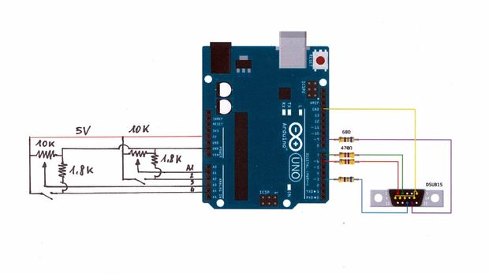
Finalização
O Arduino UNO e o conector VGA foram colocados na caixa de Madeira.
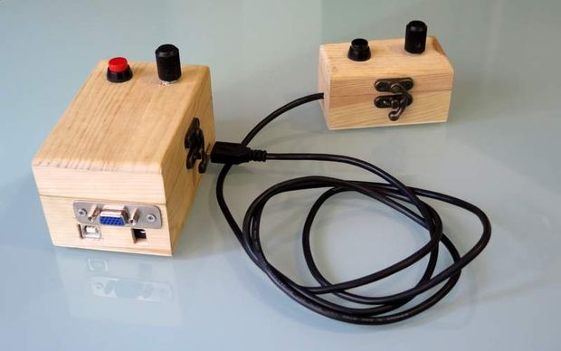
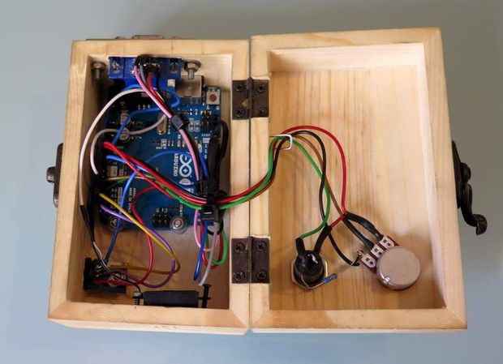
O jogo pode ser visto a funcionar neste video.
Outros artigos/projetos interessantes de ler:
- A Micro Solar Inverter - based on Arduino
- Avalanche Noise Amp: Arduino Firmware
- Arduino Floppy Music
- Juggling Robot Deftly Handles Balls
- Physics Fan Cart
- Arduino weather station with RF433 MHz modules
- Deuterium Powered Homes and the Return of Cold Fusion Hype
- Synchronise DS3221 RTC with PC via Arduino
- Helical antenna (helix) for FM radio
- Decoding and sending 433MHz RF codes with Arduino and rc-switch
Compras ^
Artigos do ebay ou de outras lojas online que poderão ser úteis em projetos. A informação aqui presente apenas serve para ajudar na aquisição dos componentes. O altLab não tem qualquer intervenção/participação em qualquer negócio aqui apresentado.
10pcs CD4060BE CD4060 4060 Ripple Carry Binary Counter IC DIP-16 pin Low Power
(http://www.ebay.co.uk/itm/381375017145) - US $1.66
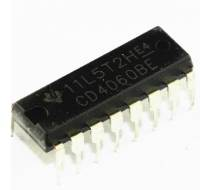
Product information
10pcs CD4060BE CD4060 4060 Ripple Carry Binary Counter IC DIP-16 pin Low Power
NPN Transistor TO-92 2N2222A 2N2222 100Pcs Hot Sales New High Quality LZ
(http://www.ebay.co.uk/itm/201094966517) - £0.99
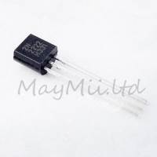
That's all Folks!